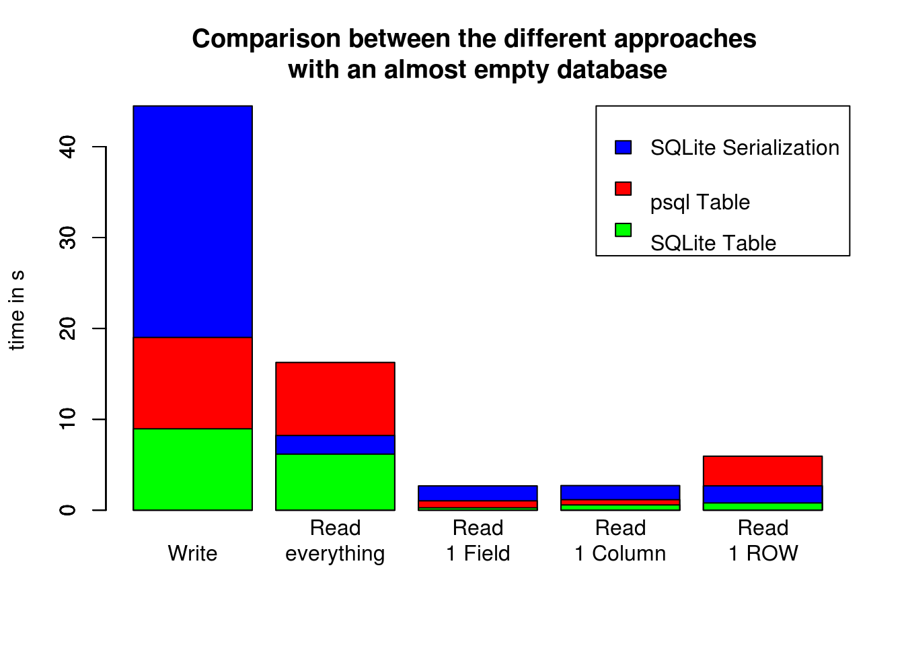
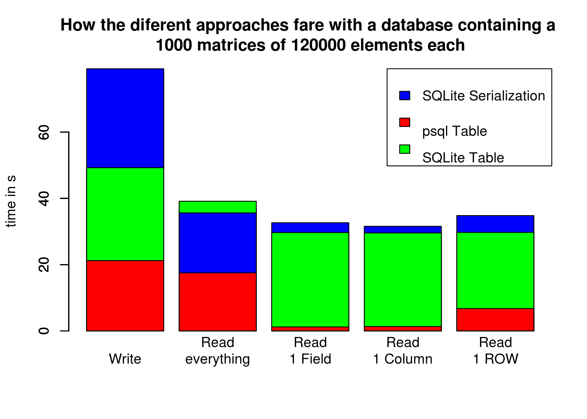
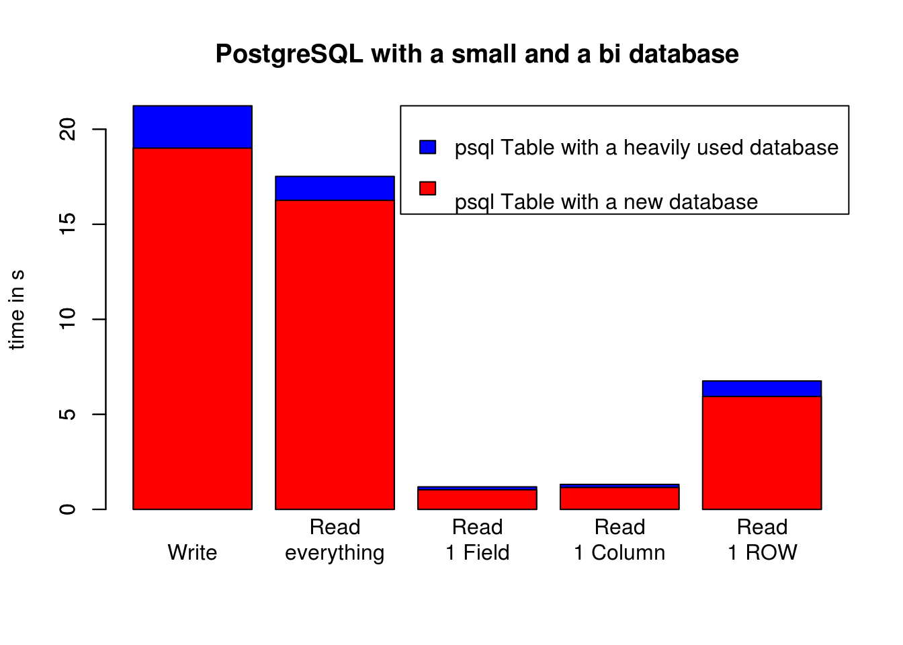
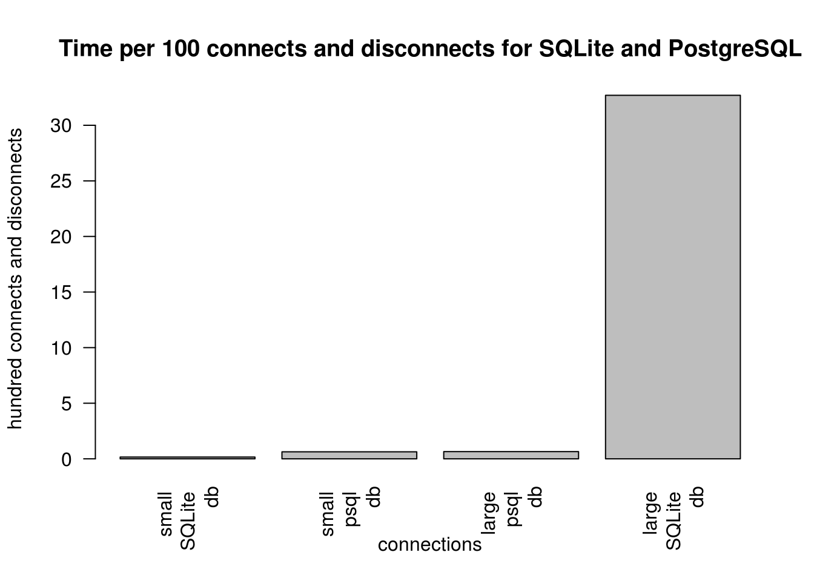
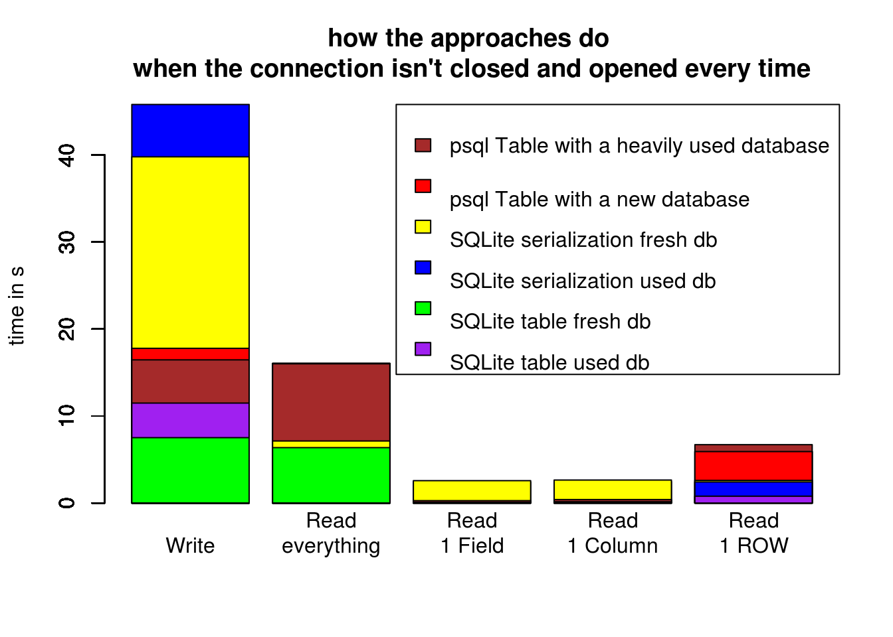

Comparison between diiferent approaches of implemetation of matrices in a database: The serialization approach in SQLite, the read and write table from DBI approach in SQLite and the read and write table from DBI approach in PostgreSQL.
  
 As one can see, SQLite is very time time-consumming when frequently opening and closing a connection to a big database, meanwhile PostgreSQL doesn’t change.  If the connection to the database doesn’t get opened and closed every time, the difference between a big and a small database becom smaller and the difference between PostgreSQL and SQLite also becomes smaller.